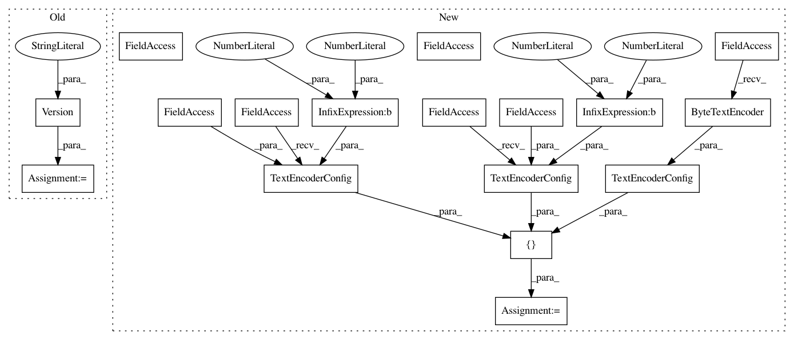

9ecc8219a35842cecb94d207cdf22fe230aac1ef,tensorflow_datasets/text/yelp_polarity.py,YelpPolarityReviews,YelpPolarityReviews_1,#,78
Before Change
class YelpPolarityReviews(tfds.core.GeneratorBasedBuilder):
Yelp Polarity reviews dataset.
VERSION = tfds.core.Version("0.2.0")
def _info(self):
return tfds.core.DatasetInfo(
builder=self,
After Change
class YelpPolarityReviews(tfds.core.GeneratorBasedBuilder):
Yelp Polarity reviews dataset.
BUILDER_CONFIGS = [
YelpPolarityReviewsConfig(
name="plain_text",
version="0.1.0",
description="Plain text",
),
YelpPolarityReviewsConfig(
name="bytes",
version="0.1.0",
description=("Uses byte-level text encoding with "
"`tfds.features.text.ByteTextEncoder`"),
text_encoder_config=tfds.features.text.TextEncoderConfig(
encoder=tfds.features.text.ByteTextEncoder()),
),
YelpPolarityReviewsConfig(
name="subwords8k",
version="0.1.0",
description=("Uses `tfds.features.text.SubwordTextEncoder` with 8k "
"vocab size"),
text_encoder_config=tfds.features.text.TextEncoderConfig(
encoder_cls=tfds.features.text.SubwordTextEncoder,
vocab_size=2**13),
),
YelpPolarityReviewsConfig(
name="subwords32k",
version="0.1.0",
description=("Uses `tfds.features.text.SubwordTextEncoder` with "
"32k vocab size"),
text_encoder_config=tfds.features.text.TextEncoderConfig(
encoder_cls=tfds.features.text.SubwordTextEncoder,
vocab_size=2**15),
),
]
def _info(self):
return tfds.core.DatasetInfo(
builder=self,
In pattern: SUPERPATTERN
Frequency: 3
Non-data size: 17
Instances
Project Name: tensorflow/datasets
Commit Name: 9ecc8219a35842cecb94d207cdf22fe230aac1ef
Time: 2020-08-03
Author: epot@google.com
File Name: tensorflow_datasets/text/yelp_polarity.py
Class Name: YelpPolarityReviews
Method Name: YelpPolarityReviews_1
Project Name: tensorflow/datasets
Commit Name: 9ecc8219a35842cecb94d207cdf22fe230aac1ef
Time: 2020-08-03
Author: epot@google.com
File Name: tensorflow_datasets/text/yelp_polarity.py
Class Name: YelpPolarityReviews
Method Name: YelpPolarityReviews_1
Project Name: tensorflow/datasets
Commit Name: 9ecc8219a35842cecb94d207cdf22fe230aac1ef
Time: 2020-08-03
Author: epot@google.com
File Name: tensorflow_datasets/text/lm1b.py
Class Name: Lm1b
Method Name: Lm1b_1
Project Name: tensorflow/datasets
Commit Name: 9ecc8219a35842cecb94d207cdf22fe230aac1ef
Time: 2020-08-03
Author: epot@google.com
File Name: tensorflow_datasets/text/imdb.py
Class Name: IMDBReviews
Method Name: IMDBReviews_1